LoomKV：从显存到 SSD 的无损 KV 缓存压缩
LoomKV 讨论长上下文大模型服务怎样用现有显存、DRAM 和 SSD 保留更多键值缓存。论文第一作者 Wentao Zhu 来自华东师范大学，合作机构为中兴通讯。论文以 arXiv 预印本公开，独立的公开实现尚未核验。论文入口
大模型服务把键值缓存从显存卸载到主机内存和 SSD，让多轮对话和智能体请求复用提示词前缀。外置缓存容量决定前缀能否在被淘汰前得到复用，显存中的键值缓存池限制能同时执行的长请求数量，而有损压缩会改变键值缓存的数值及模型输出。
1. 背景和问题
1.1 为什么前缀命中仍可能排队
自回归 Transformer 的预填充阶段会为输入序列生成每层注意力的键和值，之后每个解码步把当前查询与已存在的键做匹配，并聚合对应的值。相同前缀沿用先前计算出的张量，即可绕过对应的预填充。智能体可能在几百个回合内反复携带增长的执行历史，多轮对话常带最近的消息，检索增强生成也常携带相同文档。对于这样的工作负载，一个请求结束意味着它的计算已经结束，先前生成的中间状态却可能在本会话的下一次请求到达时继续有用。一次命中节约的是本该重复完成的前缀计算，一次未命中可能把很长的输入重新放回执行队列。输入只有很少一部分变动时，重新计算的成本仍受前缀长度影响。论文中的真实轨迹之所以容易观察到这种效应，就在于大量前缀跨回合出现，且单个会话的长度也足以消耗明显的显存。
显存首先为正在执行的请求服务。vLLM 把显存码好的空间拆成多个固定大小的物理页，以逻辑块号查询页表。请求的相邻 token 块可以映射到不相邻的地址，预填充和解码都依靠页表把这些页视为同一上下文。会话结束或暂时离开后，可复用的完整块也可以放到外置缓存。主机 DRAM 是较快的一层，SSD 容量大但需要经过读取与预取。论文里的外层部署采用 LMCache 的写穿策略，每个新对象从 DRAM 写入 SSD，两层独立地按照最近使用情况淘汰。外置层接到查找时会返回已经保存的最长前缀，SSD 上命中的对象预取到 DRAM，再经 PCIe 进入显存。这样避免了重算，但新请求仍要拿到足够多的显存页才能运行。外层容量耗尽影响的是一个对象到复用时刻的存活性，显存池耗尽影响的是当前正在运行和等待的请求能否分到页。同一个「延迟升高」表象可以由两种竞争引起，对应的改动也落在不同组件。
活跃工作集、GPU 驻留占用、当前队列长度各有自己的时间尺度。前缀留存涉及会话的思考时间、写回、淘汰和再次访问，显存压力由当前上下文大小与并发分布决定。Qwen3-30B-A3B 每个 token 的 BF16 KV 大小为 96 KB。论文在引言中给出的规模示例是 32 GB 预留池只够约五个 64K-token 会话。相比一个只知道请求数目的容量模型，这个示例揭示了调度器为何必须关心长短请求混合比例。假如新到请求主要是长前缀，外置命中为其省下预填充计算，同时它在解码期间仍长期持有显存页。反过来，外层连续淘汰也会增加 GPU 上的重算负担，导致读到的队列指标含有第二种影响。论文先控制每一层的容量和请求准入，再把两者同时放紧。
1.2 两处容量瓶颈
作者先用未压缩 BF16 做了三种观察，分别改变外层容量、改变显存并发压力，以及检查 KV 的字节分布。
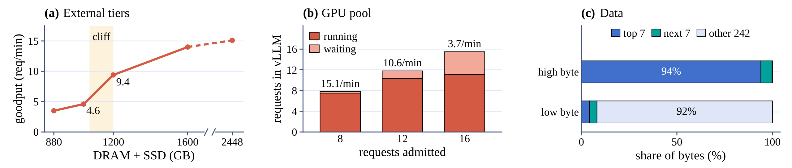
Figure 1 左图固定 DRAM 为 400 GB，把 DRAM 和 SSD 的合计容量从 1,200 GB 压到 1,040 GB，满足时延目标的请求数便从每分钟 9.4 降至 4.6，正文配对的命中率从 0.84 下降到 0.55。损失集中在曲线的狭窄区间，其直接线索是再次访问到来时，相关块已经被最近最少使用策略清掉。容量继续增加时曲线趋缓，这也是后面压缩模式即便节约相同比例的字节也不会在所有端点产生同幅度收益的原因。中图固定 SSD 为 2 TB，再放宽 vLLM 前置准入上限。上限从十二升到十六时，平均运行数仅增加约 0.8，等待数却多约 2.9，每分钟达标请求数由 10.6 降到 3.7。增加外置容量本身无法为这些请求提供正在执行所需的显存页。
右图按层内 K、V 张量分别统计，将四十八层的九十六个张量汇总。它先在每个张量内分别对高字节和低字节的取值频率排序，然后平均覆盖率，所以蓝色占比代表各自张量中的常见值各自集中，分类本身允许不同层由不同字节值占据高频位置。高字节头七项约覆盖百分之九十四，头十四项达到百分之九十九点八一。低字节的头七项和头十四项则仅占百分之四点二一和百分之八点二一，其余部分约百分之九十二。左侧两图说明容量值值得优化，右侧分布解释了从何处节约字节。这里的频数是从测到的张量计算，码本对未见字节仍要有可逆的后备表示，否则右图末尾虽细，整个表示却不能逐位恢复。三项观察合起来还能区分诊断信号：命中率随外部配额陡降时应追踪回收和再次访问，命中率稳定而内部等待扩张时应同时检查页池剩余量。
1.3 从简化字节流到端到端容量
BF16 的高字节携带符号和指数的高七位，低字节含指数的末位及尾数。高字节的集中性让以固定长索引替代常见取值成为可能，保存低字节可以让恢复路径保持字节对齐。对在线 KV 来说，同一个张量在不同输入或位置生成不同值，压缩器还须处理分布尾部，原始表示也须可恢复。近似量化可以直接用更少的位数表达每个值，适用与否取决于业务能否承受输出变化。LoomKV 研究的约束是保存已有 KV 表示的每一位，也可将已量化表示当作输入，在量化之上继续压缩。按这一定义，FP8 上的无损描述以输入已是 FP8 为前提。
进一步的约束来自分配器和消费者。先把较短数据塞回与未压缩时一样大的分配槽，容量增加为零。若恢复方式必须把全量数据先写入连续中间缓冲，还要第二次散写回引擎页，减少的存储字节可能被更多显存流量抵消。作者比较通用 GPU 压缩库和偏传输的做法时观察到，前者即使空间比例接近，离散页恢复速度仍明显较慢，后者连续解压可以很快，接到引擎上却要为散写再付成本。另有离线压缩权重并融合矩阵乘法的路线，但权重可以离线规整，KV 每个请求都在线生成且会逐页回收，缓存的生产和消费次序都不同。
因此，这篇工作的可检验目标是把压缩的字节节约兑换成等效容量，同时把读写成本压到服务链能够吸收的程度。设给定物理预算为 $B$，落盘记录字节相对原始字节的比例为 $r$，理想原始等效容量是 $B/r$。真正的等效需要同容量的放大原始对照支撑。还要区分命中后从哪一层取数据、是否等待 GPU，以及是否仍达成首字延迟和字间延迟目标。方法设计也随之拆开：外层用实际记录长度分配空间，显存用缩小后的等大小物理页兼容引擎页表。两条路径共享编码思想，但各自在消费者最自然的粒度做布局。
2. 方法
2.1 两种部署方式与共享码本
同一个 vLLM 引擎可以走标准后端和外置压缩，也可以换成插件后端，在显存池里保留压缩记录。两者的解压时点决定记录布局。 一个分支把服务器视为外置对象的写入和恢复者，另一个分支把成品记录交由注意力直接消费。共享码本之后，两个分支仍分别需要组织自己的索引。
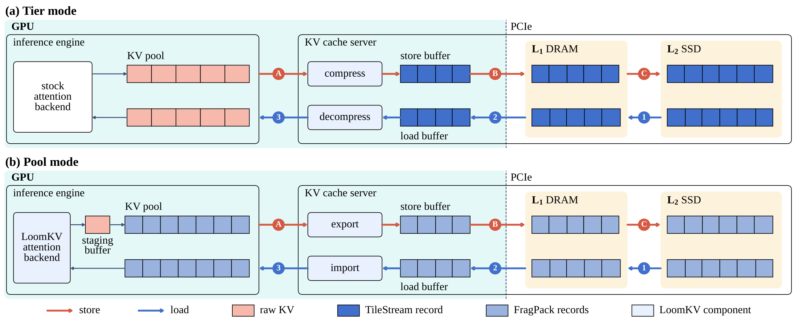
Figure 2 的上半部分沿红线走一遍写入。引擎刚填满一块时通知缓存服务器，服务器通过 CUDA IPC 读取引擎页，直接压缩到 GPU 的写缓冲，之后把 TileStream 记录复制到主机 DRAM，再按写穿策略写 SSD。蓝线先将 SSD 独有的对象预取至 DRAM，按已有记录长度复制到 GPU 读缓冲，解压器把原 BF16 或 FP8 布局放回引擎页。图上最左仍是原后端，意味着进入注意力时拿到和原部署相同的输入张量，也保留原内核执行顺序。外置命中涉及一次实实在在的恢复，显存中已经存在的前缀页则可以直接复用。TileStream 将一百二十八个 token 的所有层 K、V 作为一个传输记录，粒度符合缓存服务器搬运一个完整块的需求。
下半部分在完整块提交相应页时才形成 FragPack，当前增长中的块暂存在显存的原始缓冲。读取已完成的缓存页时，由插件内核直接打开压缩记录。图中服务器的两处操作相应改成打包导出和重新导入，PCIe 搬运的是记录，不必先恢复为引擎原布局再压缩。这里一个 FragPack 记录只有一层一个 KV 头的 K 或 V；缓存服务器打包同一块各层的记录后形成外置对象。这把显存内的消费单位和跨层传输的对象单位区分开，注意力可先取 K 求分数，再取 V 聚合，不必把一块所有头与层一起恢复。一个节点启用池模式时，外部两层也承接同一压缩表示，因而它能同时改变外层与显存的容量边界。两种模式的共同起点是固定三位主码。每层的 K 和 V 各自为每个 KV 头校准静态码本，同一线程所读的相邻元素可以共享该表，从而把取值更新消解为查表。Tier 模式第二级仍用三位。
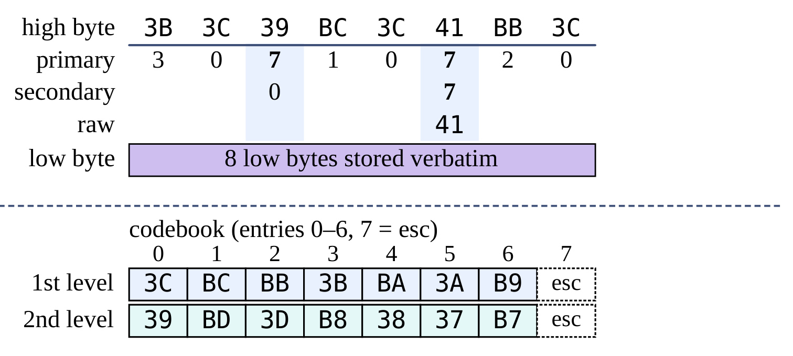
Figure 3 的高字节行里，三个 3C 出现在不同位置，却都传主码零，3B 传主码三。第三个高字节 39 在主表中找不到，先写七来标记逃逸，再在二级写零。第六个高字节 41 连第二级也找不到，写完两个七之后，把 41 放进原字节流。读端沿同样顺序恢复标量位置，只在主表标了逃逸的地方取二级值，只在二级再逃逸的位置取原字节。三个数组保存的是不同种类的材料，原值流中的 41 和二级流中的零都不含原位置编号，位置由逃逸顺序隐含给出。与在整个连续位流上记录起始偏移相比，每个标量的主符号可由索引直接定位。例子的底部保留了八个未经改动的低字节，说明恢复必须把同一标量的两个字节重新合成，即使高字节相等，低字节也仍可能不同。因而高字节为主表命中、二级命中或两次逃逸时，标量高字节路径依次花三位、六位和十四位，三种情况都另存同样的八位低字节。
对校准数据做一次离线一千零二十四 token 的前向即可确定每张表的条目，记录头中带码本摘要，用于防止用错。没有模型专用表时能用通用表。对于 E4M3，作者保留三位尾数，编码高五位，并先减去静态的逐通道指数偏置，恢复时把偏置加回。因为 RoPE 会随位置成对旋转 K 的通道，FP8 校准会把捕获的 K 在二百五十六 K 的上下文位置上重做旋转，再拟合偏置。该步骤发生于离线校准，在线解码读取既定表与偏置。BF16 配置无需这步处理。
2.2 外置层的 TileStream
TileStream 将标量拆到低字节、主码、二级码、原高字节四种流。前两种所有位置都占空间，后两种随逃逸次数变长。要多个 warp 直接访问各自位置，记录需要给变长流提供可跳转的索引。
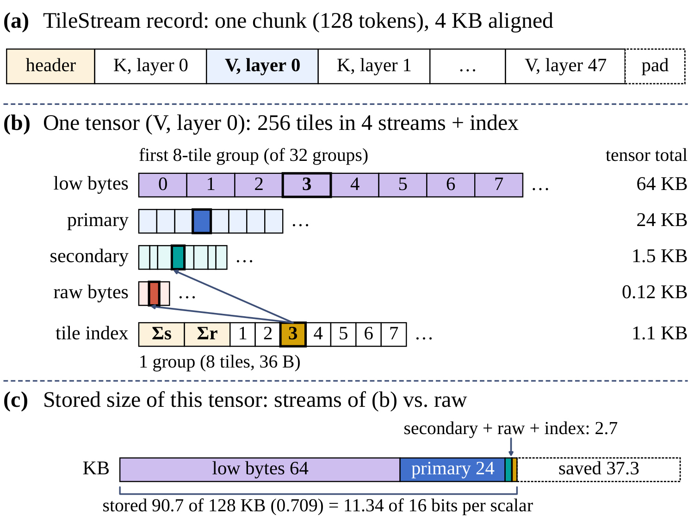
Figure 4 上半部沿一个一百二十八 token 的完整块，头和末尾对齐包住各层的 K、V。第二个面板选一层的 V 张量为例，展示四流与分组索引的关联。每瓦片二百五十六个标量，由三十二线程各处理八个。低字节与主码的偏移由瓦片序号乘以固定位宽直接得到，二级与原字节的偏移要从该瓦片之前的逃逸数得到。若每个瓦片各用两个三十二位累计值，索引开销为每标量四分之一位。作者每八个瓦片组成一组，组首用两个三十二位全局计数，其余七个槽各用两个十六位组内增量，合计三十六字节。面板中的瓦片三查到的是组首总量加同组第三个增量，前两个瓦片无须解码。拆流也同时满足按同类材料合并访存的要求，变长数据集中在两条独立的流，主码和低字节都按固定宽度组织。
底部将五种开销汇总。一张代表性张量的低字节六十四 KB、主码二十四 KB，二级码、原高字节与索引合计约二点七 KB。原来的每个标量十六位降到十一点三四位的算术关系如下。示例是张量内平均值，完整记录还需要头部和对齐。服务器知道记录真实长度后按实际占用申请 DRAM 对象，SSD 保存同样长度，后续预取能凭主机元数据找到正确的已分配位宽。遇到不可压缩块用原始数据回退，避免在最坏输入上扩大原块。
符号解释：$j$ 是组内瓦片序号，$O_s,O_r$ 表示二级和原高字节流的偏移计数，$\Sigma$ 是组首累计，$\Delta(j)$ 是组内增量。$p_e=0.061$ 是主码逃逸率，$p_r=0.0019$ 是需要原高字节的比例，0.14 是每标量的分组索引位数。主码三位遍及全部元素，故只有 $3p_e$ 计入额外二级符号成本。两次逃逸的标量另需八位原高字节。
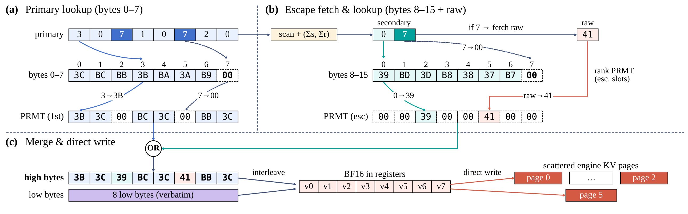
Figure 5 延续八个标量的例子，给出恢复侧怎样将二级变长流归还给各原位置。一个线程把连续三位符号扩成四位选择器，通过位运算得到逃逸掩码，随后利用 warp 内扫描获得其他线程在它之前累积的逃逸个数。把扫描结果和 Figure 4 的瓦片起点合并，就知道该线程在二级流上从哪里取。再对二级逃逸做相同的局部计数，可以取到必需的原高字节。一、二级码本放在寄存器中的十六字节区域。第一次 PRMT 从前半码本得到常见高字节，逃逸位置写零；第二路通过查二级表、装入原值及按位置重排，给逃逸位置补上高字节，其他位置写零。图中两路重叠于同一输出轴，并且每个位置只有一路提供有效值，因此按位或足够合并。
底部先将八个高字节和八个原低字节交错成 BF16，再从寄存器以向量写入目标页。页号依赖已验证的主机元数据，记录产生的读偏移受 GPU 缓冲区边界限制。这个约束区分了数据内容和目的地址控制：字节记录可以提供值以及读索引，写到哪一页由引擎映射决定。写入侧也直接从引擎页读取，依次统计瓦片逃逸、为整批安排流偏移和回退位置、写入头部和紧凑记录。三段内核在主机不逐段等待的情况下连续提交，避免先把原块 gather 到连续缓冲，再遍历原始字节进行压缩。吞吐实验所测的离散页恢复正是这一数据流的输出口径。左侧列出的逃逸掩码也说明解压并行性的粒度。线程只需在自己的八码内恢复相对位置，线程之间交换前序逃逸数量，瓦片之间则无需同步。
2.3 显存池的 FragPack
池模式把一个头下的一百二十八 token、每个 token 一百二十八维的 K 或 V 作为记录。压缩时按照线程的矩阵乘操作数片段重新排序。K 与转置的 V 用不同顺序，便于每个线程从连续位置取到自己解码和计算所需的六十四个标量。
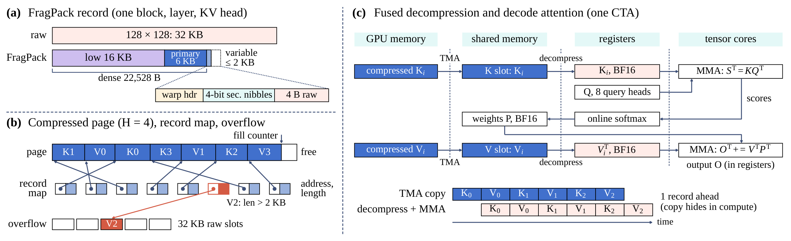
Figure 6 左上把三十二 KB 原记录拆成固定的低字节十六 KB、主码六 KB 和上限为二 KB 的变长区。这里每个 warp 负责已知的标量位置范围，可以用八个 warp 的前缀头替换逐瓦片索引。二级用四位，十五项普通索引加一项逃逸。原高字节条目带原位置，论文为每条使用四字节。扩大二级码把 Qwen3-30B-A3B 平均每记录的原高字节补丁从二十五个降至零点三个，使每 warp 的线程能各处理至多一个补丁，避免在最内层循环反复补值。正文报告 Qwen3 变长区均值约五百五十字节，样本最大一千八百七十二字节。
左下把八个记录打到一个缩小后的页上。记录可以按任意完成顺序竞争页的填充计数器，原子比较交换只有在空间够时才前推进度。一次较长记录塞不进时不会把最后一段可用空间吃掉，后完成的较短记录还有机会落页。超出记录限制或整页剩余预算时写到共享溢出区，以原始三十二 KB 槽容纳，记录映射标出地址和长度。读取不依赖写入先后，长度超二 KB 可直接辨识原格式。论文的 Qwen3 实验回退约占记录的百分之零点零三，由页满触发的仅约百分之零点零零九。右侧沿共享内存、寄存器和张量核推进。TMA 交替取后续 K 或 V，寄存器就地重建片段，在线归一化、两次矩阵乘后在寄存器累积输出。无需把展开的整段 KV 写回全局显存并重新读一遍。
符号解释：$H$ 是页内的 KV 头数，$i$ 对应在 CTA 内处理的记录块，$Q$ 是查询，$S$ 是注意力分数，$P$ 是在线 softmax 得到的权重，$O$ 是输出累积。以 $H=4$ 计算，四头各有一 K 一 V，一个物理页从 262,144 字节降到 190,464 字节。这给的是未扣缓冲的页数比例。TMA 让两个共享内存槽分别和各自源地址的模一百二十八余数匹配，以减少非对齐传输惩罚。新块尚未填满前用原始暂存，GPU 上按填充后批形状生成注意力工作，图外钩子填入固定容量的已完成块列表，使 CUDA Graph 的启动参数保持稳定。预填充依然使用原注意力内核，命中压缩页时先在临时空间恢复，因为其计算比逐 token 解码更占主导。
2.4 读写流水线和同步边界
压缩输出要依赖数据才能知道长度；如果主机提交完压缩就同步取长度，单处理线程上已排队的读也会被拖住。读到显存的路径则要跨计算与传输两个时序。
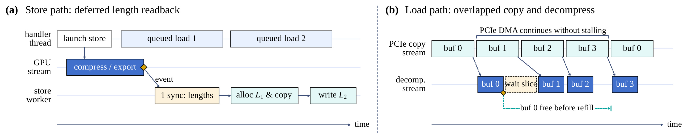
Figure 7 左图中，处理线程只领取写缓冲、提交压缩或导出并插入事件，随后立刻处理已经排队的读。写 worker 自己等待事件，对最多三十二个块的长度做一次同步回读，按长度分配主存，复制数据，再将新对象写穿至 SSD。把同步移出主处理线程后，写入对在线读的阻塞显著减少。长度仍必须等 GPU 写完，也必须在分配之前获得；高流量突发用完所有写缓冲时，引擎通过背压等缓冲释放。由于容量回收与写穿继续交给缓存服务器，改变发生在写任务的调度和对象长度交付。
右图解决独立进程共用 GPU 时的另一条依赖。PCIe DMA 可以发传输，解压内核仍可能要等计算时间片。单缓冲设计中前一次解压迟迟未退休，后一次复制就无处落脚。四个缓冲循环使用后，复制流依次填充不同槽，解压流只等对应槽的复制事件。回收槽零也仅等槽零上一轮解压完成，图中等待时间片的空档和余下缓冲的 DMA 可以重叠。引擎本地已命中的整块不再重复加载；部分命中需要保留先前有效页时，恢复走临时缓冲加原散写路径。池模式沿用两条时间线，把恢复替换为验证并导入 FragPack 记录，整批提交完后查询一次导入状态。遇到错误对象或溢出区已经满，失败批次由引擎重算。这个失败语义保留了请求可完成性，也让压缩回退成本在端到端评估里有独立的触发路径。用图中的四槽运行时，应分别观察等对应复制、等计算时间片和全写缓冲占满的时间，三者出现在不同依赖链，不能合并归因给压缩内核慢。
3. 实验结果
3.1 位数与跨模型压缩比
作者先测表示长度，再测内核和整条服务链。实验服务器用两张八十 GB H800，主存一 TB、SSD 十五 TB；主实验表中的部署容量是人为限额。服务引擎为 vLLM 0.30，默认注意力为 FlashAttention-3，缓存为 LMCache 0.5.6。二者的块与对象统一为一百二十八 token。模型以双卡张量并行的 Qwen3-30B-A3B-Instruct 为主，对照 GLM-4-9B-Chat-1M。先看跨模型测试中的对象长度和可逆编码代价。
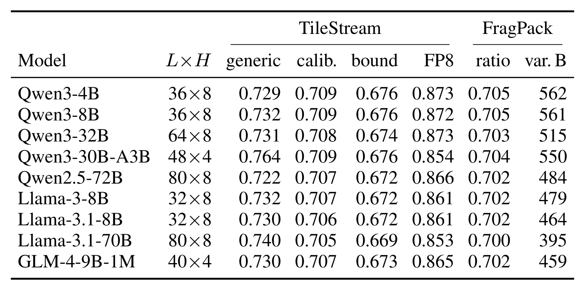
Table I 各行的 $L\times H$ 分别表示层数与 KV 头数。原表脚注说明样本来自一个智能体会话的四千零九十六 token，使用其中最初一千零二十四 token 校准。按该量测口径，九个模型的 BF16 TileStream 校准列集中在 0.705 到 0.709，FragPack 记录比例为 0.700 到 0.705。Qwen3-30B-A3B 的通用码本为 0.764，专用码本为 0.709，零阶熵参考为 0.676。正文把记录超出下界的部分划给定长符号和元数据、包含索引与对齐。因此表里的小数既反映高字节的可预测性，也包含布局为快速访问付出的代价。最右的均值范围是每记录三百九十五到五百六十二字节，全部低于共享页按每记录预留的一千二百八十字节。读这一列还需了解溢出靠尾部分布触发，均值本身无法推导页满概率。FP8 列填写的是另一种起始表示压缩后的比例，0.853 到 0.873 所用分母为原始 FP8 字节；它还能在已经量化的缓存上继续节省一部分容量。该表的 FragPack 比例也只衡量记录本身，未把页内留有但未被记录使用的空间或后端工作缓冲算在其分母中。
从表内结构看，两种小 Qwen 都有八个 KV 头且层数相同，校准比例和记录长度接近。三十二 B 的 Qwen 把层数增加到六十四但仍持有八头，校准后比例依然在 0.708。比较 Llama-3.1 的八 B 与七十 B 行，层数从三十二增至八十，记录比例只是从 0.702 变到 0.700。由这些行能读到结构变化后每个原始字节的压缩潜力还在，至于整机需要多少 KV，仍要把层数、头数、头维和上下文 token 数都算进去。压缩比例接近无法推出各模型在给定卡上并发接近。对比校准列和零阶界列，每模型仍有约 0.033–0.036 的比例差，保留了无损高吞吐布局付出的确定开销。
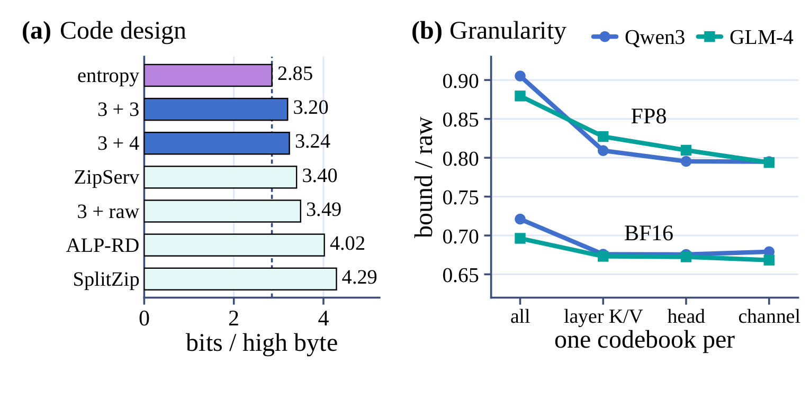
Figure 8 左侧比较高字节平均编码位数。零阶熵参考为 2.85，三加三为 3.20，三加四为 3.24，而主码逃逸后直接放原字节的组合为 3.49。宽二级码的代价仅是每个高字节平均多约零点零四位，正文估计对应总 FragPack 记录多约百分之零点一，换取更少原高字节的随机补丁。右侧用两模型的零阶参考比较粒度。BF16 从全局转为按层的 K 或 V 划分就取回大部分可压缩性，再分到头变化很小，按通道更细分也无显著收益。FP8 配置中，逐通道偏置配合每头码本，Qwen3 达到与逐通道码本相同的 0.795 参考，GLM 则是 0.810 对 0.794。作者另外检验了文体、代码、中文对话、数学、合成和随机 token，以及最长约二百四十 K 的序列位置，BF16 的比例仍很集中。这个覆盖支持所测模型和数据下的静态校准，分布换成其他张量布局时仍要重新检查。注意右图的纵轴是分粒度计算的零阶界，左图的纵轴列编码方案，二者衡量的对象不同，不能拿最右的界值替代任何服务配置的实测比值。
3.2 GPU 微基准
TileStream 落地在真实缓存里，必须从已有离散页读出，也必须回到离散页。下面的带宽以等效原始字节计，能够比较同样多的原始 KV 被恢复需要多长时间。
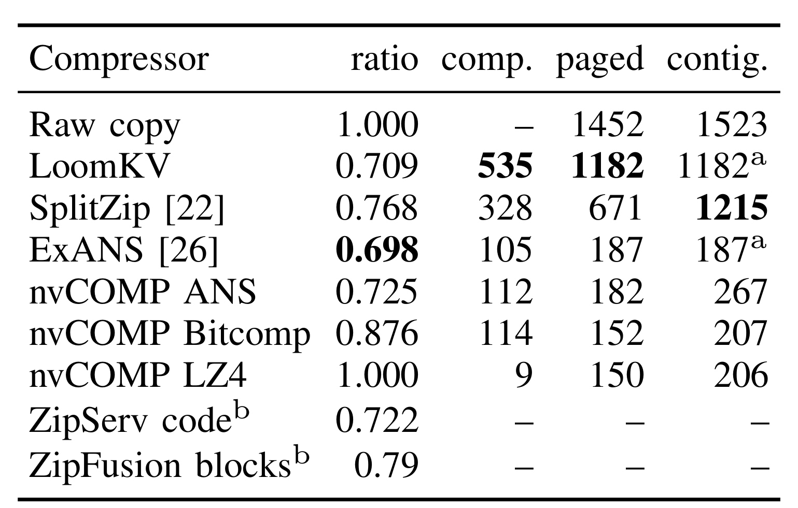
Table II 使用一张 H800 与 Qwen3-30B-A3B 的约 3.2 GB KV，每次处理二百五十六个块。535 GB/s 是 LoomKV 直接从页压缩的吞吐，1,182 GB/s 是恢复到离散页的吞吐，为原始页复制 1,452 GB/s 的约百分之八十一。行末标记 a 的方法直接写离散块，因此连续和页目标列相等。SplitZip 解压到自身连续输出为 1,215 GB/s，在必须继续散写到引擎页的列降至 671 GB/s，这解释了为何只报连续吞吐会改变相对排序。ExANS 的比例为 0.698，比 LoomKV 的 0.709 更紧，离散页恢复则为 187 GB/s。空间和读取速度因此需要一起取舍。LZ4 在这个数据上的比例四舍五入为一，测得无压缩收益。标记 b 的 ZipServ 与 ZipFusion 两行只比较离线长度，对应服务路径吞吐留空。该表测的是指定大小的 GPU 操作，跨 PCIe 或端到端请求另外实验。
同类算法之间，nvCOMP ANS 原始等效恢复为页目标 182、连续目标 267 GB/s，这表明即使提高连续解码速度，散写仍会让服务端的有效交付下降。Bitcomp 页目标为 152 GB/s 且只把记录缩至 0.876，在这两个维度都没有接近 LoomKV。直接恢复的 ExANS 则提供另外一种对照，它没有多出的 scatter 衰减，速度差仍达到约六倍，反映可变长熵解码本身就会带来额外运算和位置读取。作者在微基准核对逐字节一致，所以这些取舍在同一个恢复正确性的边界内。
作者还在一个进程进行 BF16 大矩阵乘并占满计算资源时，让独立缓存进程加载十一万 token 前缀。一个读缓冲使缓存进程的时间片等待直接拖累下一次 PCIe 复制，加载达 288–294 毫秒，原始复制为 117–141 毫秒。改成四缓冲后缩短至约九十毫秒，接近 GPU 空闲时单缓冲的八十三毫秒。这里真正消掉的是跨次缓冲依赖，单次解压本身仍然要等待分到计算资源。
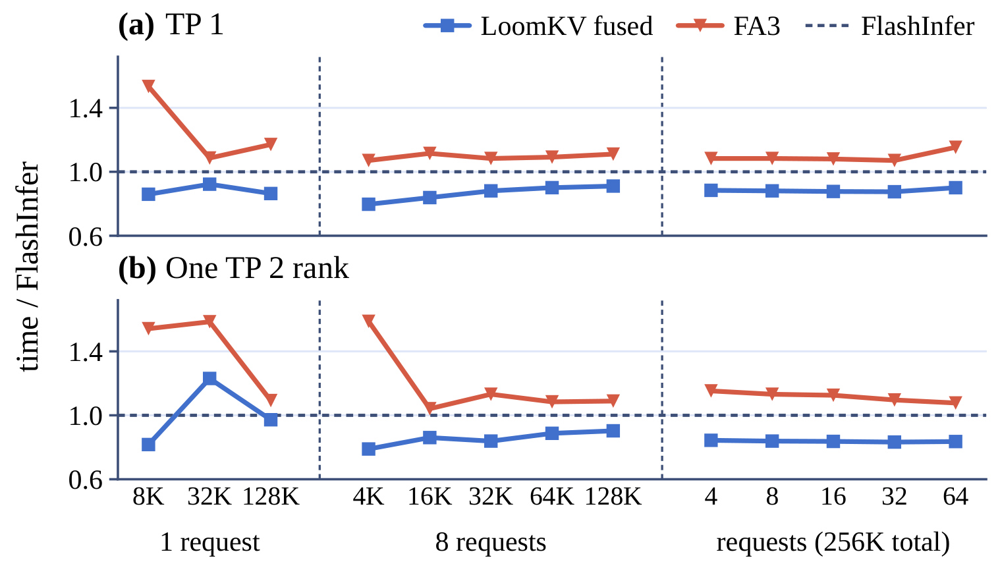
Figure 9 以 FlashInfer 耗时为一，横轴分别扫描单个请求上下文、八个请求的上下文和固定总 token 数时的请求数量。上面是单卡四头，下面是双卡并行的一个秩、每秩两头。在满频的 BF16 测试里，单卡融合耗时约为 FlashInfer 的 0.80–0.92 倍、FA3 的 0.56–0.85 倍；双卡秩图中只有单请求三十二 K 的融合曲线点超过虚线，耗时超出约百分之二十三。作者还让同一内核读原始 FragPack，单卡多请求为 FlashInfer 的 0.90–0.96 倍，说明内核自身和减少字节读取各贡献一部分。在持续运行接近七百 W 功率上限时，BF16 仍在多数形状领先；FP8 则多数情形收窄或失去优势，且与 FA3 的查询处理实现存在差异。图的纵轴是 decode attention 子步骤的相对时间，不能据此把整个请求的首字或完整生成时间等比例压缩。横轴最后一段在相同总 token 数下改变请求数，前两段保留不同的固定批大小，也有意拆开了总上下文读量与拆成多少请求的影响。单请求较轻的形态更容易让布局和固定指令的相对成本上升，观察少数点的回退比简单取所有样式均值更能说明服务灰度时的检查对象。
3.3 外置层容量与首字延迟
AgentX 重放 393 个 Claude Code 会话的树状轨迹，保留子智能体及思考间隔。不同会话不共享前缀，提示长度中位约 89K，最长 254K。常见实验点维持六十四个活跃会话、400 GB DRAM，准入上限八以尽量排除显存池等待。预热后统计一千八百秒、约六百请求，每个配置重复三次，表格按 goodput 中位的那次运行列其他配对指标。这里引擎首字延迟扣除了前置代理等待，达标率还要求字间延迟合格。
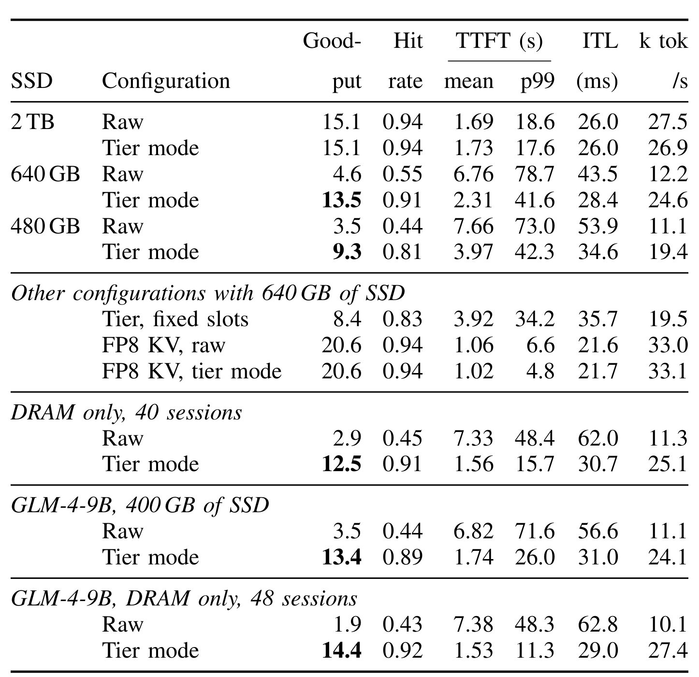
Table III 的前两行提供容量足够时的同档对照。两 TB SSD 下总命中率同为 0.94，每分钟达标请求同为 15.1，输入吞吐由 27.5 降至 26.9 千 token 每秒，可见压缩有一定代价。最明显的结果在六百四十 GB SSD：命中率 0.55 升到 0.91，平均首字由 6.76 秒降到 2.31 秒，达标请求提升到每分钟 13.5，原始配置只有 4.6。四百八十 GB 档也有提升，代表运行是 3.5 到 9.3，正文以多轮结果范围给出约 2.7–3.6 倍 goodput。表中 SSD 一栏须加常驻的四百 GB DRAM 才是全外层物理预算。表脚注还明确 goodput 是符合双时延目标的每分钟请求数，吞吐用千输入 token 每秒，相同容量档只在差距超过重复运行波动时强调较高的值。
同一张表中的定长槽对照验证了分配环节。保持压缩格式，但每条记录预留原始长度的百分之九十，空间增益只剩约百分之十一；同一六百四十 GB 档的命中率从精确长度的 0.91 降至 0.83，goodput 从 13.5 降为 8.4。定长槽 p99 这次为 34.2 秒，低于精确长度的 41.6 秒，提示代表性重复的长尾会波动，判断机制应同时看命中、均值和达标量。FP8 在该档已有很高命中率，两行 goodput 均为 20.6；这组原生 FP8 基线使用不同数值表示。对已采用 FP8 的部署，继续无损压缩在空间更紧的 DRAM-only 配置仍有增益，正文报告六十四会话时 hit rate 升至 0.92、goodput 达 19.4。同表另外列了 GLM 的四百 GB SSD 档，原始到压缩的命中从 0.44 至 0.89，达标由 3.5 至 13.4。GLM 的每 token KV 原始尺寸低于 Qwen3，一样的字节预算能放更多 token，故两个容量不足点不能按同一 SSD 数字比较。表中的吞吐、平均首字和尾部首字取自按中位 goodput 选中的整次运行，其好处是指标来自同一段服务时间，代价是各列之间可能受个别事件影响，不能各自解释为三次的中位数。
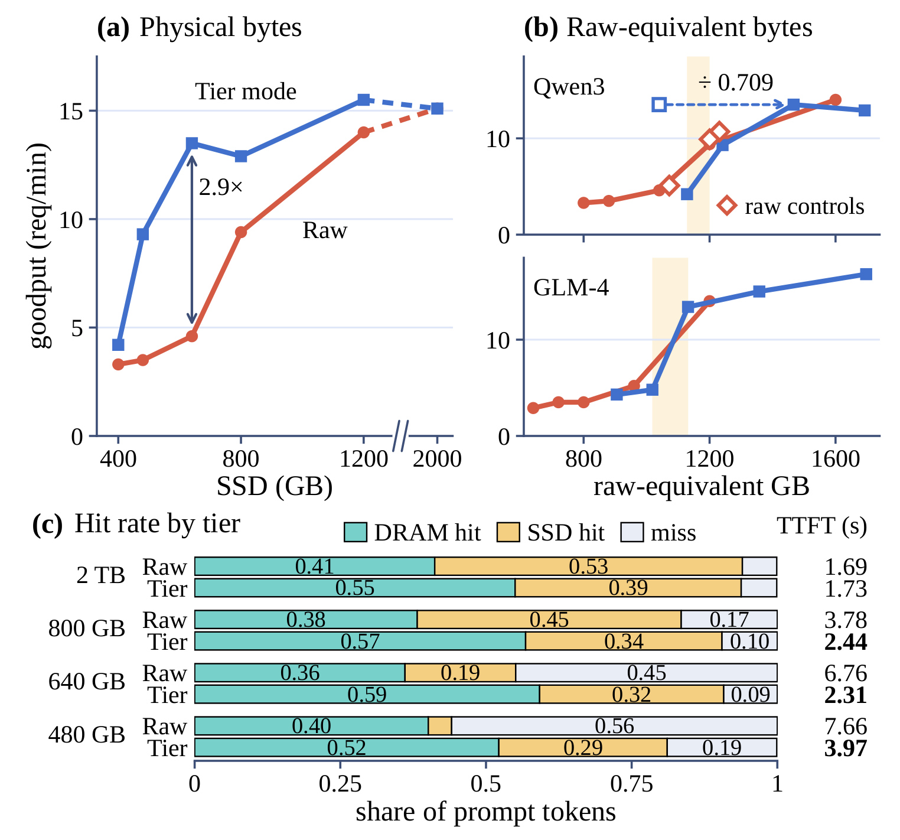
Figure 10 的三个面板依次验证容量差异、等效性和延迟机制。左上按真实 SSD 容量画两条曲线，六百四十 GB 对应两模式之间一条约 2.9 倍的竖箭头。右上把压缩点按外层总物理字节除以存储比例重画，Qwen3 使用 0.709，GLM 使用 0.707，点沿容量轴右移，同模型两种模式的曲线大体重合。空心菱形是实测的原始扩容对照。八百八十 GB 物理容量换算约一千二百四十一 GB 原始等效，tier 实测重复在每分钟 9.3–12.5，按比例放大 DRAM 与 SSD 的一千二百三十一 GB 原始对照为 10.7。另一对照只扩大 SSD，另一只扩大 DRAM，也落在相同曲线附近。它把由压缩引出的容量变化与实现细节导致的服务变化区分开来。
底部堆栈给出两种效应。在六百四十 GB 档，原始配置有百分之四十五提示 token 失配；压缩后的同档只有百分之九，回到 GPU 的负载更少包含重算。两 TB 档的总命中都为 0.94，DRAM 命中份额从 0.41 升至 0.55，SSD 份额相应下移。此时全局平均 TTFT 从 1.69 到 1.73 秒，虽然两 TB 时中位 TTFT 能从 0.99 到 0.89 秒，因此不能用命中上移直接承诺均值下降。作者再用四十八个分别为八 K 至一百二十八 K 的重复提示词单独测第二轮，将 261 GB 原始内容压到 188 GB；在 220 GB DRAM 配置下，热点进到主存能让第二轮首字快 1.6–1.7 倍。容量断崖对应是否重算，热点晋升对应走哪层读取，两种作用可以在不同容量附近出现。图中一千二百 GB 与两 TB 之间的横坐标存在轴折断，读曲线时应该比照标示的真实数值和阴影拐点，避免用画面上的斜率去外推每增加一百 GB 的预期 goodput。近崖每轮波动较宽，右侧两模型对齐证明的是趋势和原始对照接近。
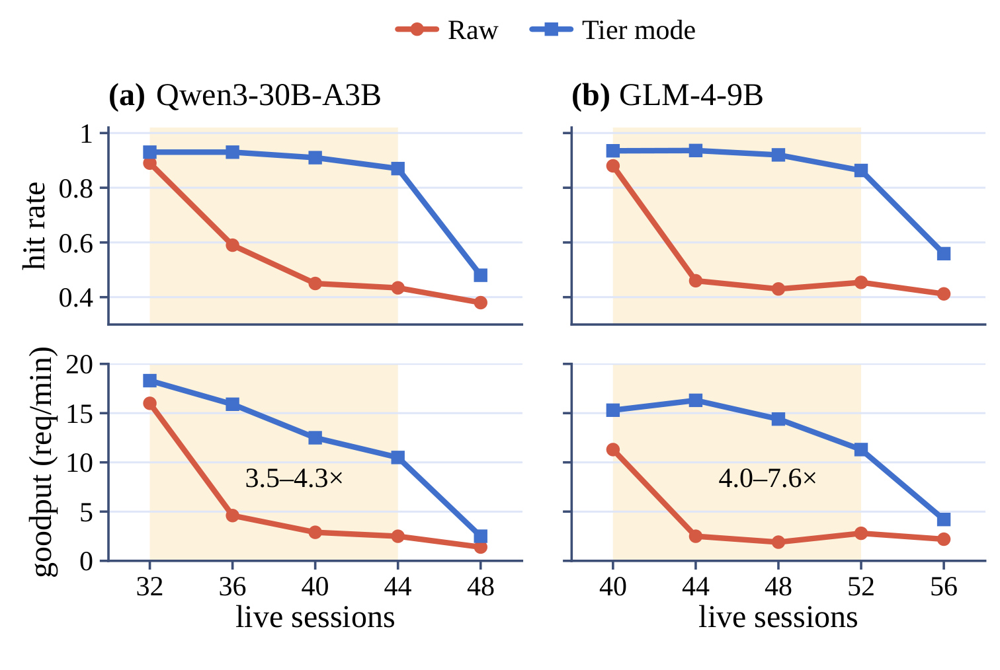
Figure 11 把 SSD 完全拿掉，横轴改为同时存活并可能复用缓存的会话数，和后面调整引擎准入上限的实验含义不同。Qwen3 在三十六至四十四会话附近出现两条曲线间的大差异，GLM 在四十四至五十二附近类似。上排显示原始命中先掉，压缩命中在更大范围维持；下排的达标请求对同一区间响应，Qwen3 约为原始 3.5–4.3 倍，GLM 可到 7.6 倍。以 Table III 的 GLM 四十八会话为例，命中从 0.43 到 0.92，goodput 从 1.9 到 14.4。作者估计平稳服务的会话数可提高约 1.2–1.5 倍。以会话作横轴同时改变了重用工作集和访问次序，它是支持作用机制的第二类扫描；倍率要随活跃会话的上下文和复用间隔判断，尤其当两个配置都已跌出阴影区，压缩工作集也会因淘汰而重算。移除 SSD 后，原有「命中从 SSD 上移到 DRAM」机制已不存在，图的改善直接关联到更多前缀活到复用，提供了与双层实验不同的交叉验证。两组曲线走到右端以后均变低，说明即便使用压缩，也会跨进自己的容量不足区间。
3.4 显存池容量与并发
显存池试验固定大外置层，所有行的缓存命中率在 0.93–0.94。Wait 是 vLLM 内部平均等待请求数，仍需和前面代理过滤的请求等待区分。改变压缩格式和准入上限后，便可直接观察卡上页数。
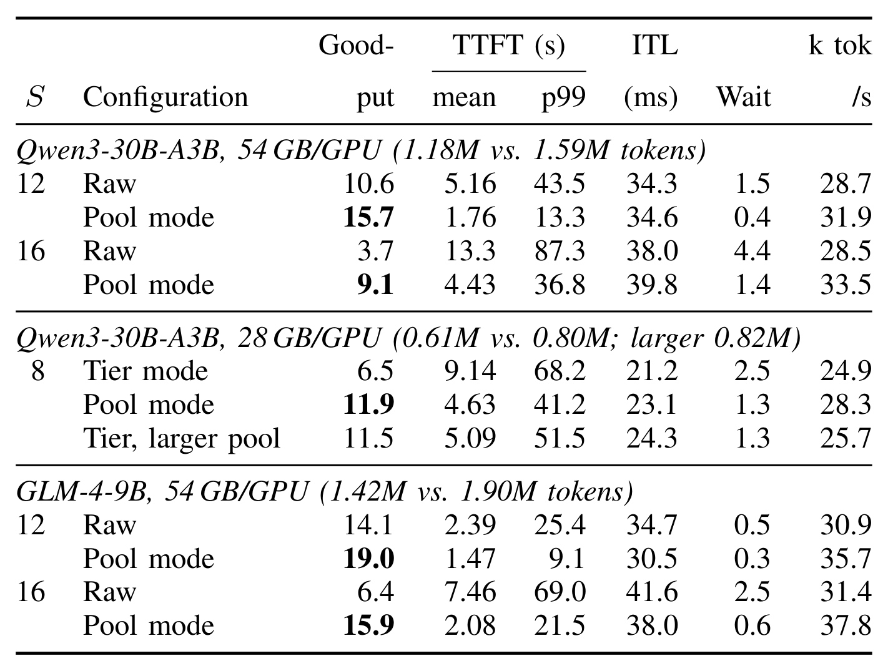
Table IV 第一组每卡预留五十四 GB，Qwen3 的可用 token 从约一百一十八万到一百五十九万；准入十二时，压缩池把平均内部等待从 1.5 降为 0.4，goodput 从 10.6 到 15.7，平均 TTFT 从 5.16 降到 1.76 秒，而 ITL 近似相同。准入十六时两者均见排队，压缩池 9.1 对 3.7 每分钟达标，仍低于自己在准入十二时的 15.7。这说明每分钟提示吞吐上升可与更少请求达标同时发生，不能按单个指标决定并发上限。GLM 在五十四 GB 档也有类似的等待下降，差异出现在该模型的页数与长度分布对应的准入处。准入十六时 15.9 每分钟达标，高于这个模型的原始池准入十二时的 14.1。
二十八 GB 子实验只列 tier 模式搭配原始池、pool 模式和把原始池增大的 tier 对照。原始 LMCache 在这个资源档发生调度卡住：一些加载完成但尚未开始的长请求占住百分之七十二至八十二的池，且当时没有正在运行者可抢占，因而无对应基线数值。压缩池把约六十一万 token 提至八十万，达每分钟 11.9；把原始池扩到八十二万的对照为 11.5，显存等容量解释因此有直接实测支撑。物理页几何提供未扣开销约 1.38 倍页数，绝对固定的暂存、溢出和记录映射等使两档实际可用容量分别为约 1.34 倍和 1.31 倍。较小池的固定开销占比更高，部署时按页字节算出的上限会偏高。论文给出另一组几何参考：逐记录保留最坏二 KB 的页可以得到 1.33 倍原始块数，完全无空隙的理想压缩池约 1.42 倍，中间的共享预算是 1.38 倍。这些几何比例都有统一的基准，而表里的实际 token 数已计入后端工作缓冲。GLM 的层数与 Qwen3 不同，也会带来不同的原始每 token 字节数，所以表里更适合在同一模型的每组内部先比较。
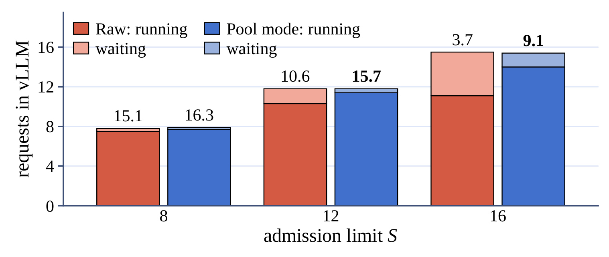
Figure 12 的柱形深色区是平均运行、浅色区是等待，柱顶数字才是每分钟达标请求数。准入八时两种池都接近无内部排队，原始池的 15.1 和压缩池的 16.3 处在较高水平。到了准入十二，压缩池柱内浅色仍窄，达标约 15.7，近似原始池准入八；同档原始的等待区域开始明显，达标降至 10.6。准入十六时，压缩池实际运行约十四个请求，原始约十一点一个，两边都出现等待。图中准入增加四并未把实际运行人数同幅推高，长请求占满页后的新增准入数主要进入队列。这个读法也说明了作者所说的「十二对八」是更高并发维持相近排队和 goodput，同时提示吞吐仍增约 1.16 倍。它依赖六十四会话、大外层、固定显存预算，实际比例不宜直接搬到更短请求的负载。观察柱形时还应区别深颜色的高低和浅颜色的变化，若只看总高度便会把占了候选准入名额但没有启动解码的请求也误计作吞吐。
3.5 双重瓶颈与精确性
作者再在生产衍生的 AI IDE 轨迹做开放循环回放，三小时约五千一百请求，平均每秒 0.47。平均提示词 68K，p99 为 192K，平均输出五百零五 token。没有外部 FIFO 准入代理，所以这里的 TTFT 包括 vLLM 排队。
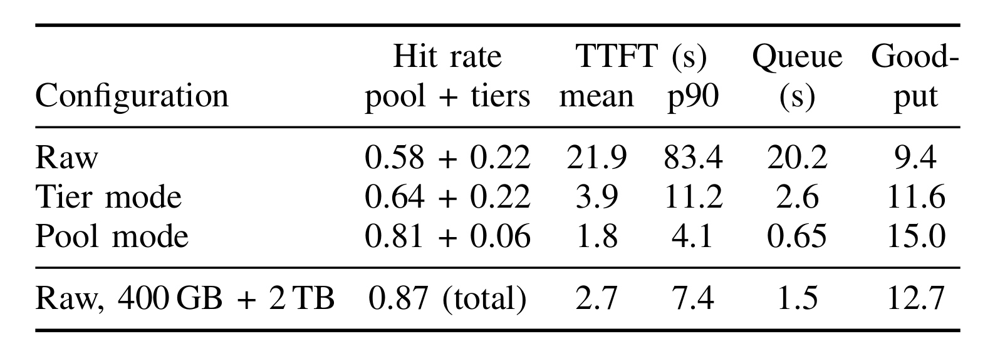
Table V 前三行是在 128 GB DRAM 和 512 GB SSD 的同一硬件配额。原始总命中为 0.80，mean TTFT 为 21.9 秒，其中 mean queue 占 20.2 秒。只压外层后，总命中恢复至 0.86，首字平均变成 3.9 秒，达标请求从 9.4 提到 11.6 每分钟。池模式的 total 约 0.87，接近 tier 的 0.86，却把显存直接命中从 0.64 增至 0.81，外层命中降到 0.06。对同样命中的 KV 来说，位置从外层转回显存减少了等待，首字降至 1.8 秒，达标到 15.0。最下一行把原始部署的外层放大至 400 GB 主存与 2 TB SSD，总命中同为 0.87，但 mean queue 仍为 1.5 秒，goodput 为 12.7。它说明用总命中率比较两种配置会漏掉命中位置和运行池容量，单看 TTFT 的平均倍数也无法等比例预测受阈值约束的 goodput。按同资源原始配置计算，tier 和 pool 的 goodput 比值分别约 1.24 和 1.59。p90 也从原始的 83.4 秒，经外层压缩降到 11.2 秒，再经显存池压缩降到 4.1 秒。放大外层的原始对照是 7.4 秒。尾部分位与均值都显示压缩池提升，但这里的均值和分位数是开放循环观察，无法直接对照 AgentX 表里的 p99。
端到端开销与精确性分开验证。外层容量充分时 tier 在 DRAM-only 与两 TB SSD 分别损失约百分之一点三和百分之二点二输入吞吐。它还多用每卡约 2.5 GB 显存，其中约 2.1 GB 是写缓冲和轮转读缓冲。对三百二十个完全不复用的三十二 K 提示，tier 和 pool 的总时间分别多约百分之零点三和零点九。论文的逐块测试覆盖原始回退、部分瓦片和错误头部等情况，tier 的贪心解码输出在 Qwen3 和 GLM 上都与原始外置方案通过 SHA-1 核对。pool 的压缩和原始 FragPack 送入同一个融合核时也是逐位一致；与 FA3 则采用相对 FP64 参考的误差测试，BF16 测试中两者的平均绝对误差均约 $3.1\times10^{-5}$。不同求和顺序仍可能改变 logits 的舍入，任务侧的 GSM8K 和长上下文 RULER 结果在所测设置中相符。
4. 总结
4.1 等效容量要比较服务行为
这篇论文把 KV 压缩的空间收益做成了缓存与调度可用的容量，并用不同控制组检验两层机制。外置层的压缩比先体现在对象长度，按实际长度分配 DRAM 和保留 SSD 地址范围之后才能容纳更多对象。额外存活到复用时刻的对象避免重算，同样已经命中的对象位置更靠上也可以少一次慢介质读取。两种过程的时延收益并不等价，前者能让请求从长预填充变成读取，后者只改变满足命中时的加载路径。显存池的物理预算则先体现在可分配页的数量，扣除给当前未写满的块、溢出和映射占去的固定空间，才得到可用 token。池内读取绕过了全量展开的写回路径，因而更大容量不必同时增加每个解码步的显存流量。
从证据上看，最能说明问题的是几个端到端对照。定长槽把独立压缩记录重新绑回浪费的空间，压缩器本身仍在但收益缩小；直接放大的原始外层可以在近似等效预算上重现 goodput；适当增大原始卡上池又能取得与压缩池近似的并发结果。单独的微基准则说明离散页直写和对计算时间片的处理为何足以把大多数恢复耗时藏在搬运之下。读业务结果时可以从现有症状倒推这些中间量。如果命中率下降且重算字数增长，应追问外层工作集和淘汰距离。如果命中维持高位但运行人数不随准入上升，则需要联系池容量和内部排队。若二者同时存在，表中的显存命中与外层命中应一起看，才能解释为何两个总命中相近的配置会有明显不同的首字。
4.2 输出口径和适用范围
无损的对象是存入缓存的数值表示。复用相同标准注意力后端的 tier 路径尤其适合需要逐位比较的服务设置；pool 的收益来自实际采用不同计算顺序的融合内核，已有同核逐位一致和跨核误差对照，出厂数值契约需要按部署上的任务指标判定。如果原来启用 FP8，进一步编码仍只能还原 FP8 位图，前面的量化误差依然存在。论文在 BF16 下覆盖的容量和时延较充分，FP8 微基准在功率上限时并不延续同样的相对性能，跨精度的扩容收益也应结合新的起始字节与服务瓶颈估算。
作者用模拟验证了不同回收策略如何移动外层断崖。举例说，独占式 LRU 消除两层重复驻留后，原始断崖本身移到较低的物理预算，继续压缩后对应断崖约按 0.71 缩放。它补充了实际 LMCache 写穿部署的解释，模拟直接报告的是命中，比实测的端到端达标率少了调度与带宽影响。论文估计写穿 LRU 下总外层约在复用工作集的 1.8 倍走出断崖，而仅 DRAM 约 1.2–1.3 倍；这些值依赖活跃工作集的估计、过期块的驻留时间和层间副本，适合作为该轨迹的容量参考。工程验证可以在观测相同负载时保留独立的外层容量扫描与显存预算扫描，跟踪命中介质、重算 token、页分配和等待的分位数，再对复用强度变化后出现的拐点横向核对。
论文覆盖单节点 PCIe、单卡和双卡张量并行，每个秩独立编码自己的 KV 头，未测试流水线或专家并行、多引擎共享缓存服务、MLA 或 FP4。八十 GB H800 的 TMA 与 tensor core 行为、字节流内核使用的指令和上下文形状都参与了当前微基准结果。还有一点需要保留：AgentX 的首字时间扣掉外部代理队列，开放循环 IDE 回放则把引擎排队纳入统计。把效果跨系统解释时应按用户真正看到的等待边界还原，不然同一张时延图可以混入排队策略变化。可移植性最清楚的启发，是先对缓存工作集划分驻留需求与重用需求，再判断压缩节约在目标系统里能否变成更多页或更多仍存活的对象。